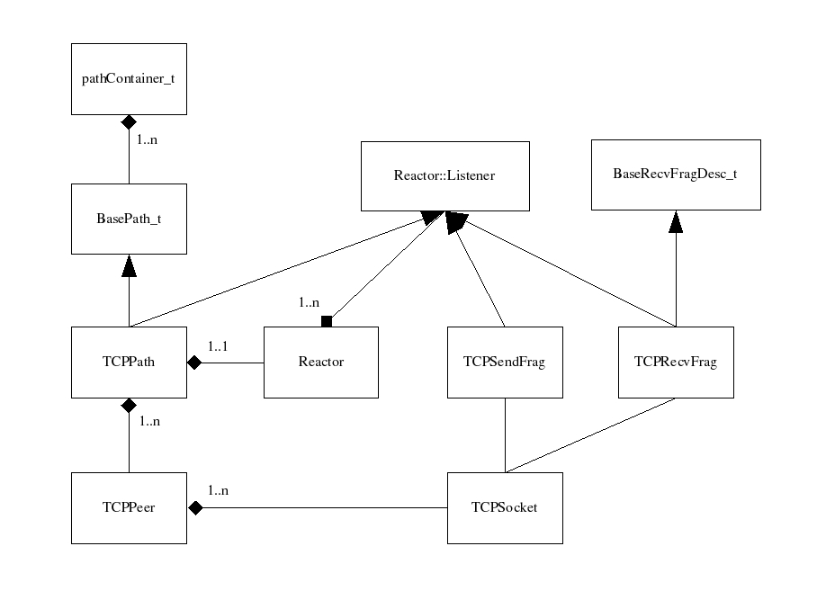

The primary goal of the design is to provide LA-MPI with a portable, cross-platform, TCP-IP path that implements a thin layer over the berkeley sockets API, providing performance comparable to netperf or other TCP/IP benchmarking applications. In general, the TCP path should be:
1) scalable
minimize buffer resources
support setting up connections dynamically on an as-needed basis
2) efficient
minimize memory copies
utilize non-blocking I/O
support message striping across multiple NICs
3) thread-safe
Minimizing buffer resources and memory copies can be achieved using a request to send / clear to send approach. Since MPI allows an application to post a send prior to a matching receive, this approach defers sending the bulk of a message until an acknowledgment (clear to send) has been returned for the initial message fragment. This eliminates the majority of buffering and memory copies at the receiver, as contiguous data types can be received directly into the applications posted receive buffer. However, to reduce the latency for small messages, some data is typically sent along with the initial fragment and buffered at the receiver if the match is not made.
To maximize the bandwidth available to the application, the design allows for multiple TCP connections to a given peer, each utilizing a different network path. This capability leverages LA-MPIs support for out-of-order delivery, striping multiple fragments of a single message across multiple TCP connections. However, since each connection consumes kernel resources, this capability is only enabled through a run-time option, and may only be suitable for relatively small clusters due to the number of connections required. Additionally, since very few NICs support TCP offloading, the overhead of TCP processing in the kernel will constrain the possible speedup.
The following figure provides a brief overview of the TCP path. TCPPath implements the basic interfaces required by BasePath_t for point-to-point sends and descriptor management. These interfaces in turn delegate most operations to an instance of TCPPeer. During initialization an instance of TCPPeer is created for each participating process. However, actual TCP connections to the peer are not established until they are required. The following provides a brief overview of the send and receive paths.
When a send is posted by an application a send descriptor is allocated by the MML and passed to paths send method (TCPPath::send). The send method fragments messages that are larger than the maximum eager send size into multiple fragments to support message striping and deferred delivery. A send fragment descriptor (TCPSendFrag) is allocated for each fragment from a process-private pool, initialized, and enqueued on the message send descriptor for delivery. Buffering of message data in the send fragment descriptors is only required if the data type of the message is non-contiguous, in which case the the message fragment is packed into a contiguous buffer that is allocated by the send fragment descriptor.
If a TCP connection to the peer has not been established, the send method will initiate a connection and return a status of incomplete to the MML. Likewise, if connections exist but are in use, a status of incomplete is returned to the MML. The MML will continue to invoke the send operation until a status of complete is returned indicating that all message fragments have been queued for delivery.
As all TCP connections are implemented with non-blocking sockets, write operations on the socket may not complete if adequate resources (e.g. buffers) are unavailable in the kernel. To handle this case an instance of Reactor is maintained by TCPPath to provide notifications that a socket is ready for read/write. If a write on the socket does not complete, the send descriptor is registered with the reactor to receive notification that the send can continue. TCPSendFrag implements an interface (Reactor::Listener) exported by the reactor, such that a method (Reactor::Listener::sendEventHandler) is called on the send descriptor when the send can continue without blocking. When the write completes the message descriptor is updated to reflect the current status and the instance of TCPSendFrag is unregistered from the Reactor and returned to the process private pool.
Each instance of TCPPeer registers with the reactor to receive notification of receive events on its connected sockets. When data is available on a socket, a method (Reactor::Listener::recvEventHandler) is called on the corresponding TCPPeer instance, which dispatches the event to the current receive fragment descriptor (TCPRecvFrag) that is associated with the connection (TCPSocket). If there is no receive in progress, a new receive fragment is first allocated from a process private pool and associated with the connection.
Each message fragment that is written to the socket is preceded by a message header which defines the overall message length, offset of this fragment in the overall message, MPI tag, etc. When the message header is received, prior to receiving the message fragment, an attempt is made to match any receives that have been posted by the application. If a match is made and the message data type is contiguous, the message fragment is received directly into the applications buffers. Otherwise, a buffer is allocated by the receive fragment descriptor and the data is copied into the applications buffer when the receive is posted.
The following sections provide further detail on aspects of the TCP path design and implementation.
The following command line arguments have been added to mpirun to configure the TCP path behavior:
|
-i <interface-list> |
A comma deliminated list of interface names to be used in establishing connections to the peers. Multiple interfaces may be specified to support message striping. |
|
-ni <number-of-interfaces> |
Specifies the maximum number of interfaces to use for message striping. This option can be used in place of the -i option to indicate that striping should be performed without requiring the user to know the interface names. |
|
-tcpmaxfrag <size> |
Specifies the TCP fragment size for message striping. This value defaults to 64K. |
|
-tcpeagersend <size> |
Specifies the TCP eager send size, or the maximum amount of data that is delivered in the initial fragment prior to a matching receive. This value defaults to 16K. |
|
-tcpconretries <count> |
Specifies the maximum number of failed connection attempts before the path is declared failed. Note that since connections are accepted only during calls to ulm_make_progress(), it is possible that applications that are CPU bound in application code may not accept connections in a timely manner, causing connection failures. If this is the case, it may be necessary to adjust this value above the current default of 3. |
In the client library pre-fork initialization code, a routine has been added to receive the TCP configuration parameters (lampi_init_prefork_receive_setup_params_tcp()) and the list of interface names to be used for IP connections (lampi_init_prefork_ip_addresses()). The latter routine retrieves the list of interface names from mpirun, and maps each interface name to its primary IP address. The list of interface names and IP addresses are then saved in the global lampiState_t data structure for use by both the TCP and UDP paths.
In the post-fork initialization code, a routine (lampi_init_postfork_ip_addresses()) has been added to distribute the IP address list associated with each process to all other processes via an allgather over the admin network. This list is then used by both the TCP and UDP path code to setup connections to remote peers.
An additional routine (lampi_init_postfork_tcp()) has been added to perform the following initialization steps for the TCP path:
instantiate the TCPPath and register with the global path container,
call the TCPPath::initClient method to create the TCP listen socket and instantiate the TCPPeer instances,
and distribute each processes TCP listen port number to all other processes via an allgather over the admin network.
Each instance of TCPPeer maintains an array of TCPSocket data structures, one for each IP addresses exported by the peer during post-fork initialization as described above. Associated with each TCPSocket is a state variable that may take on one of the following values:
S_CLOSED
S_CONNECTING
S_CONNECT_ACK
S_CONNECTED
S_FAILED
Initially each TCPSocket will be in the closed (S_CLOSED) state. A socket is not created or a connection attempted until the application attempts to deliver a message to the peer process. When this occurs, connections are attempted for all instances of TCPSocket maintained by the TCPPeer.
TCP connections are attempted in a non-blocking fashion. The state S_CONNECTING indicates that a connect has been initiated but has not yet completed. When this occurs, the TCPPeer instance is registered with the reactor for notification of write events on the descriptor, which signals that the connect has either completed or failed.
If the connection succeeds, the connecting process writes its global process rank on the socket as a 4 byte integer and changes the state to S_CONNECT_ACK. The TCPPeer instance then registers for receive events on the descriptor to receive the global process rank of the peer process.
The peer process receives notification of the connection attempt via an event from the reactor on its listen socket descriptor. When this occurs the TCPPath instance will read the process rank of the peer from the socket, and pass the connection request on to the corresponding TCPPeer instance. The TCPPeer instance then makes a decision whether to accept the incoming connection request based on its current connection status. If it has not attempted a connection to the peer, it accepts the connection and updates its corresponding TCPSocket structure to reflect that a connection exists. Otherwise, if this process has already attempted a connection to the peer, it will either reject the incoming connection request and wait for its connection to complete, or accept the incoming connection and close the pending connection. This decision is based on the process rank, with the lowest process rank winning the election. When the connection is completed or accepted, the state is changed to S_CONNECTED, at which point it can be used to deliver any queued message descriptors.
If the connection attempt fails, it is retried up to <tcpconretries> before declaring the TCPSocket instance as failed (S_FAILED). However, the TCP path is not declared failed unless the peer process is unreachable via all known addresses. This occurs when all TCPSocket instances for a given TCPPeer have reached the state S_FAILED.
Messages are fragmented to support striping across multiple adapters and RTS/CTS flow control. The initial fragment of each message contains up to <tcpeagersend> bytes of message data. If the fragment is larger than <tcpeagersend> bytes, it is delivered as additional fragments of size <tcpmaxfrag>. The initial fragment of each message is sent as soon as resources are available at the sending process (hence eager send size). The remaining fragments are deferred until an acknowledgment is returned from the peer process.
In general, acknowledgments are not required due to the reliability provided by the TCP/IP protocol. However, the first fragment is acknowledged by the receiving process when a match has been made to a posted receive. This signals to the sender that the remaining fragments can be delivered without consuming significant resources (e.g. buffers) at the receiving process.